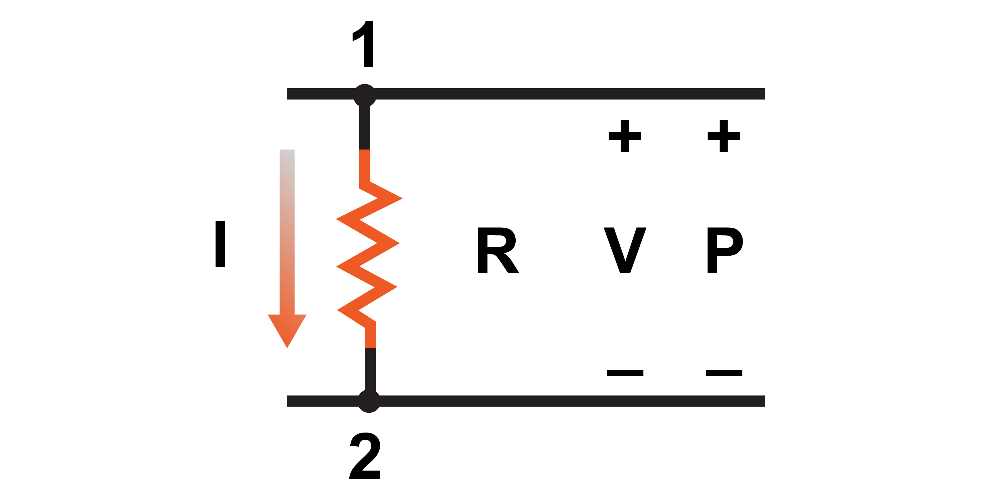
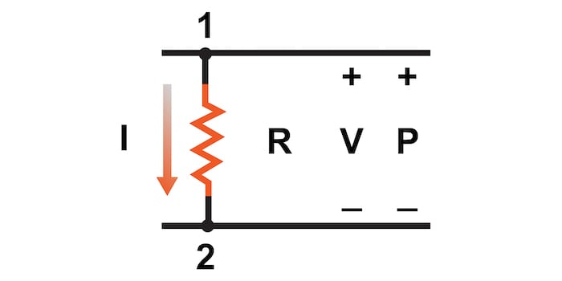
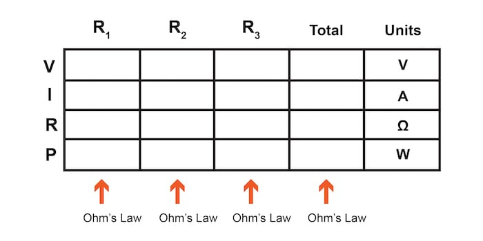
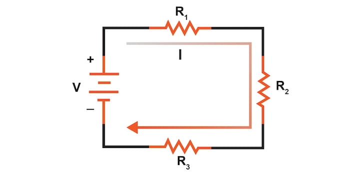
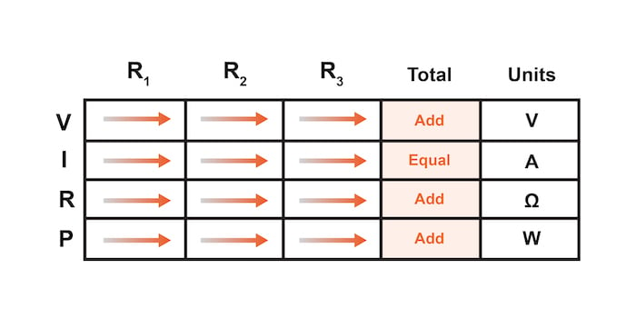
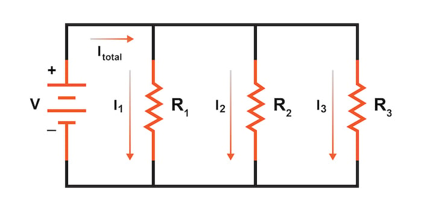
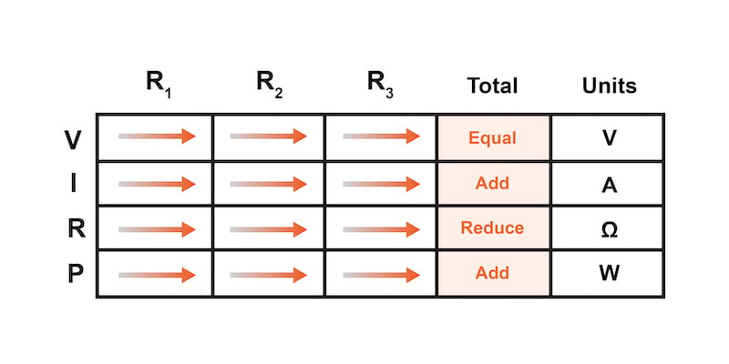

When analyzing complex series and parallel circuits, it is easy to misapply Ohm’s law equations. Remember this important rule—the variables used in Ohm’s law equations must be common to the same two points in the circuit under consideration.
When analyzing complex series and parallel circuits, it is easy to misapply Ohm’s law equations. In this section, we will introduce some helpful guidelines and methods for analyzing circuits with Ohm’s law.
One of the most common mistakes made by beginning electronics students when applying Ohm’s laws is mixing the contexts of voltage (V), current (C), and resistance (R). In other words, a student might mistakenly use a value for current through one resistor and the value for voltage across a set of interconnected resistors, thinking that they’ll arrive at the resistance of that one resistor. However, this isn’t the case.
Keep in mind this important rule:
The variables used in Ohm’s law equations must be common to the same two points in the circuit under consideration.
This concept is illustrated in Figure 1.

In the above figure, the relationship between the voltage (V), current (I), resistance (R), and power (P) is limited to the same two circuit nodes, 1 and 2.
I cannot overemphasize this rule. This is especially important in series-parallel combination circuits where nearby components may have different values for both voltage drop and current.
When using Ohm’s law to calculate a variable of a single component, be sure the voltage, current, and resistance you’re referencing are sole across that single component. Likewise, when calculating a variable of a set of components in a circuit, be sure that the voltage, current, and resistance values are specific to that complete set of components only!
A good way to remember this is to pay close attention to the two points terminating the component or set of components being analyzed. Make sure of the following:
The table method is a good way to keep the context of Ohm’s law correct for any kind of circuit configuration. As shown in Table 1, you are only allowed to apply Ohm’s law equations to the values of a single vertical column at a time:
Table 1. Format of the table method for Ohm’s law circuit evaluation.
Using a table like this to list all voltages, currents, and resistances helps clearly define where Ohm’s law equations can be used. Deriving values horizontally across columns is allowable under the principles of series and parallel circuits
Applying the table method to the series circuit of Figure 2, we can use the horizontal row rules, demonstrated in Table 2, to assist in completing the circuit analysis.


$$V_{total} = V_1 + V_2 + V_3$$
$$I_{total} = I_1 = I_2 = I_3$$
$$R_{total} = R_1 + R_2 + R_3$$
$$P_{total} = P_1 + P_2 + P_3$$
Similarly, for parallel circuits, as illustrated in Figure 3, we can apply a few basic rules for parallel circuits, as shown in Table 3.


$$V_{total} = V_1 = V_2 = V_3$$
$$I_{total} = I_1 + I_2 + I_3$$
$$R_{total} = \frac{1}{\frac{1}{R_1} + \frac{1}{R_2} + \frac{1}{R_3}}$$
$$P_{total} = P_1 + P_2 + P_3$$
Not only does the table method simplify the management of all relevant quantities, but it also facilitates cross-checking of answers by making it easy to solve for the original unknown variables through other methods or by working backward to solve for the initially given values from your solutions.
For example, if you have just solved for all unknown voltages, currents, and resistances in a circuit, you can check your work by adding a row at the bottom for power calculations on each resistor to see whether or not all the individual power values add up to the total power. If not, then you might have made a mistake somewhere!
While this technique of cross-checking your work is nothing new, using the table to arrange all the data to cross-check results in minimal confusion.